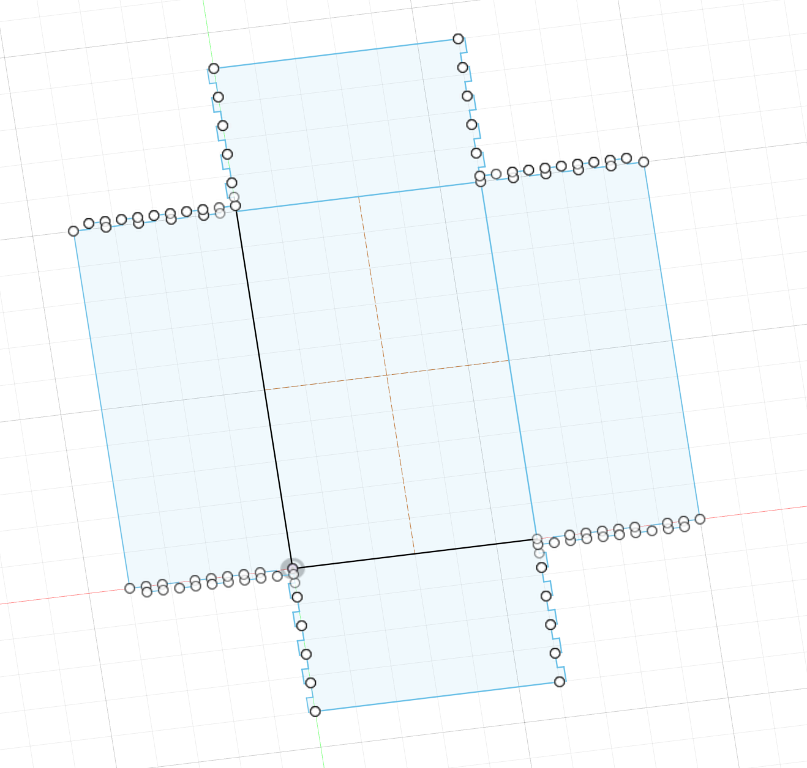
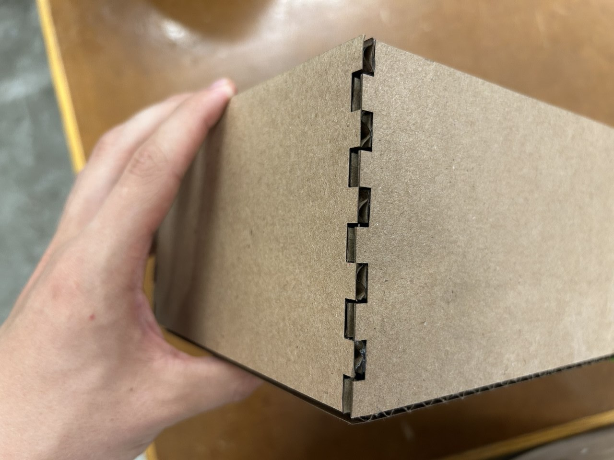
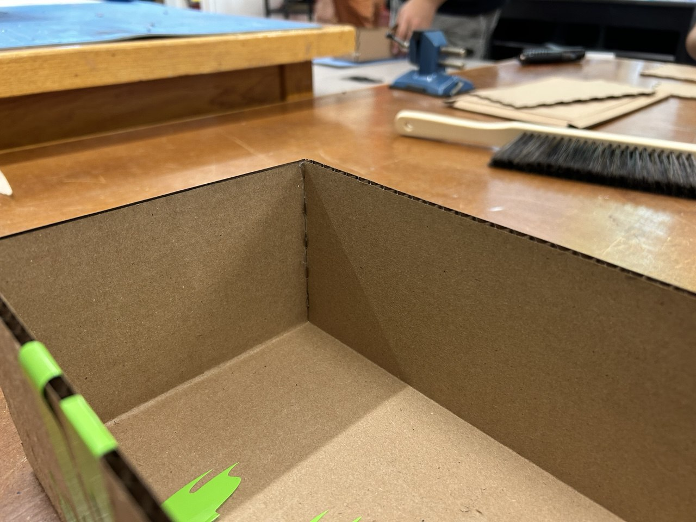
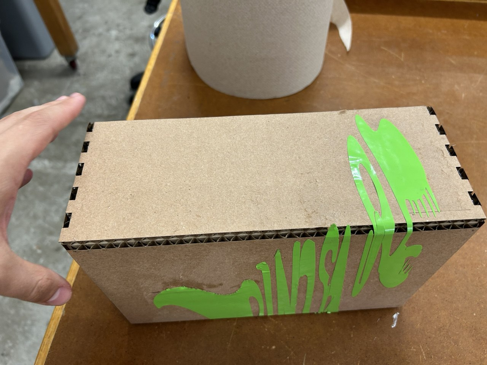
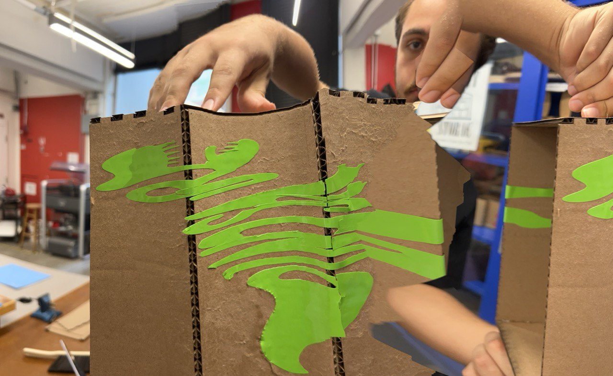
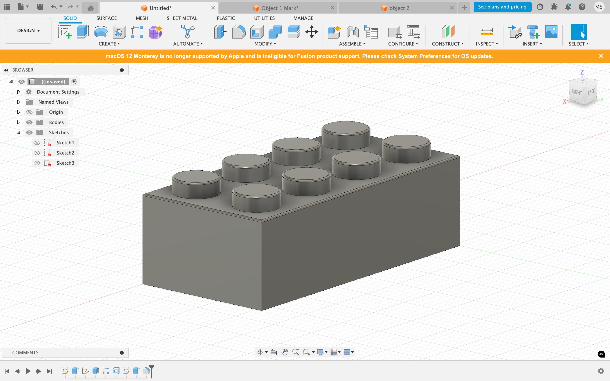
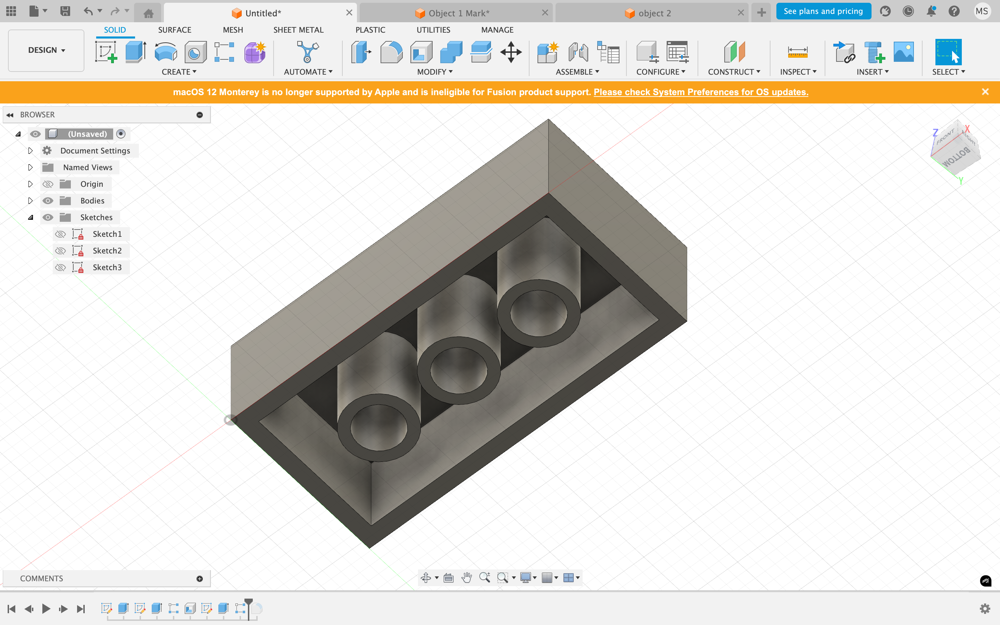
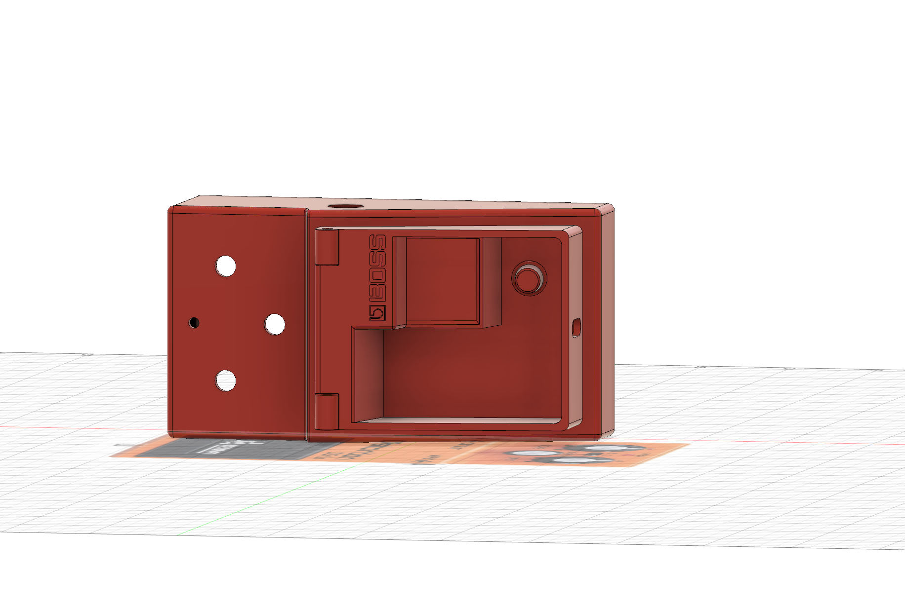
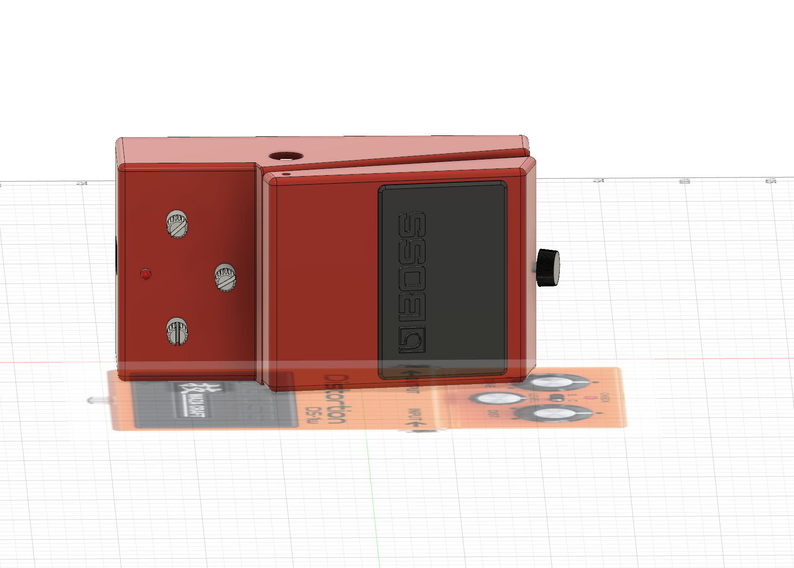
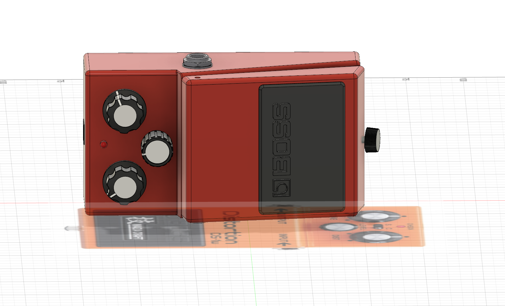

<div class="textcontainer">
<p class="margin"> </p>
<h3>Week 2: 2D Design & Cutting</h3>
<p class="margin"> </p>
<div class="flexrow">
<a id="btn" href="./MarkObjectAppleencil.3mf.zip" download>Download Apple Pencil
</a>
<a id="btn" href="./MarkObject2.3mf.zip" download>Download Boss pedal
</a>
</div>
<p class="margin"> </p>
<h4>Assignment 1: Make a Box</h4>
For this project, I made a custom cardboard box using laser cutting and vinyl decoration. I started by designing the 3D model in CAD. To make the interlocking teeth on each side of the box, I used the mirror function, which helped me speed up the process. However, this ended up creating a lot of duplicate lines without me realizing.
When I tried to cut the design for the first time, the laser cutter didn’t work properly—it started engraving almost everything instead of cutting. After checking the file, I figured out that the duplicates were the problem. I went back into the design, exploded the shapes, and carefully deleted all the extra lines.
After fixing the file, the second cutting attempt went perfectly. The laser cut through cleanly, with no burn marks, and all the teeth aligned really well. I only needed to use a little bit of hot glue to make the box hold together tightly.
To customize the box, I added a dinosaur sticker. I used Inkscape to slightly change the shape to make it look more cartoon-like. At first, I tried using the roll option on the vinyl cutter, but it didn’t work no matter how I positioned the design.
So instead, I used a vinyl sheet. Unfortunately, the machine cut through both layers, which made the sheet shift a bit while cutting. Because of that, the dinosaur got slightly deformed, but I still decided to use it, since it gave the box a more unique look.
<br>
<br> 




<br>
<br>
<br>
<h4>Assignment 2: Fusion 360 Tutorial</h4>
I have watched the tutorail series provided by our professor, as a training model I have created a lego block
<br>


<br><br><br>
<h4>Assignment 3: Fusion Modeling</h4>
I chose an Apple Pencil and a guitar pedal. The Apple Pencil was measured carefully using calipers to get accurate dimensions. The pedal was borrowed from a friend and measured by calipers as well.
To model the Apple Pencil, I created a 2D sketch of its profile and then used the revolve tool to make the full shape. The guitar pedal was a bit more complex and required multiple steps. I started by modeling the main case, and then added other parts like the buttons and knobs. I used a reference image to help with proportions, but it wasn’t the exact same pedal, so some small differences are ok.
<br>
<br>



</div>